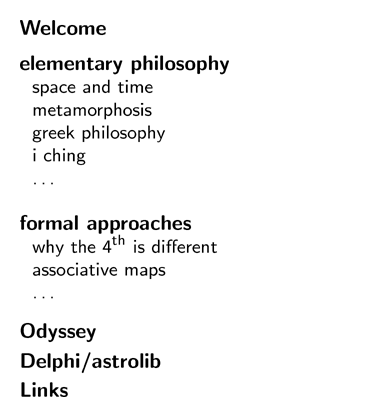
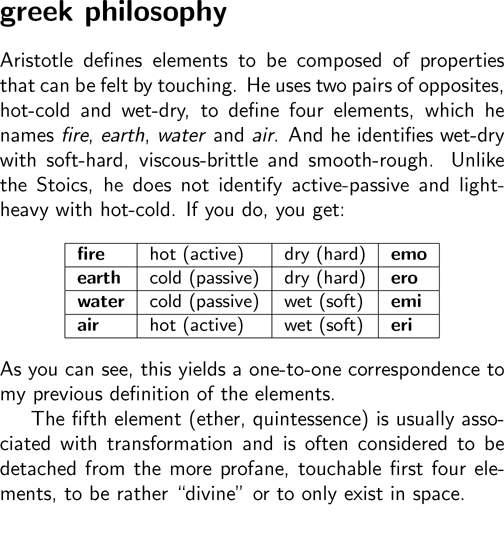
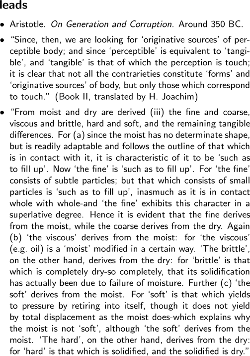

|  i i i i i i i i i i i i |
   greek philosophy Aristotle defines elements to be composed of properties that can be felt by touching. He uses two pairs of opposites, hot-cold and wet-dry, to define four elements, which he names fire, earth, water and air. And he identifies wet-dry with soft-hard, viscous-brittle and smooth-rough. Unlike the Stoics, he does not identify active-passive and light-heavy with hot-cold. If you do, you get: fire hot (active) dry (hard) emo earth cold (passive) dry (hard) ero water cold (passive) wet (soft) emi air hot (active) wet (soft) eri As you can see, this yields a one-to-one correspondence to my previous definition of the elements. The fifth element (ether, quintessence) is usually associated with transformation and is often considered to be detached from the more profane, touchable first four elements, to be rather "divine" or to only exist in space. leads - Aristotle. On Generation and Corruption. Around 350 BC. - "Since, then, we are looking for 'originative sources' of perceptible body; and since 'perceptible' is equivalent to 'tangible', and 'tangible' is that of which the perception is touch; it is clear that not all the contrarieties constitute 'forms' and 'originative sources' of body, but only those which correspond to touch.'' (Book II, translated by H. Joachim) - "From moist and dry are derived (iii) the fine and coarse, viscous and brittle, hard and soft, and the remaining tangible differences. For (a) since the moist has no determinate shape, but is readily adaptable and follows the outline of that which is in contact with it, it is characteristic of it to be 'such as to fill up'. Now 'the fine' is 'such as to fill up'. For 'the fine' consists of subtle particles; but that which consists of small particles is 'such as to fill up', inasmuch as it is in contact whole with whole-and 'the fine' exhibits this character in a superlative degree. Hence it is evident that the fine derives from the moist, while the coarse derives from the dry. Again (b) 'the viscous' derives from the moist: for 'the viscous' (e.g. oil) is a 'moist' modified in a certain way. 'The brittle', on the other hand, derives from the dry: for 'brittle' is that which is completely dry-so completely, that its solidification has actually been due to failure of moisture. Further (c) 'the soft' derives from the moist. For 'soft' is that which yields to pressure by retiring into itself, though it does not yield by total displacement as the moist does-which explains why the moist is not 'soft', although 'the soft' derives from the moist. 'The hard', on the other hand, derives from the dry: for 'hard' is that which is solidified, and the solidified is dry." |